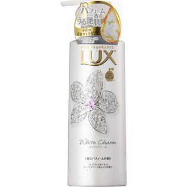

返回列表
产品名称：ラックス ボディソープ ホワイトチャーム ポンプ

ユニリーバ・ジャパン ラックス ボディソープ ホワイトチャーム ポンプ ３５０ｇ
メーカー ユニリーバ・ジャパン
JANコード 4902111732435
商品の特徴
香水まとうボディソープ
- 成分・分量
- 水、 ミリスチン酸、 ラウリン酸、 水酸化K、 ラウレス硫酸Na、 パルミチン酸、 グリセリン、 ジステアリン酸グリコール、 コカミドプロピルベタイン、 PG、 香料、 カニナバラ果実エキス、 シア脂、 カオリン、 BG、 ヒドロキシプロピルメチルセルロース、 グアーヒドロキシプロピルトリモニウムクロリド、 エチドロン酸、 BHT、 EDTA-4Na、 メチルイソチアゾリノン、 トコフェロール、 安息香酸Na、 塩化K、 クエン酸、 水酸化Na、 モモ果汁、 ソルビン酸K、 赤504、 赤227、 紫401
- 用法及び用量
- ポンプネジ部を固定しながら、ノズルを回すとポンプが上がります。(上がらない時は、固く締め直し、再度回してください。)使い始めは、数回カラ押ししてください。